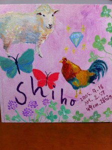
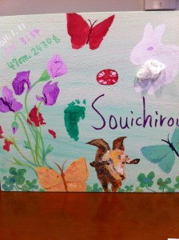

{kind=link}
志帆�メモリアルコラージュ
先��完���木�箱をラベンダー色�ペイント後�娘�誕生日�誕生石（ダイヤモンド）�星座（����座）�干支（酉）誕生花（アカツメ�）を�����。
�れも色々忘れ���自分�����（苦笑）。
ã‚‚ã�†ä¸€æ�šæ�¯å�ã�®ã�Ÿã‚�ã�«æ��ã�„ã�Ÿã‚‚ã�®ã�Œã€�ã�“ã‚Œã�§ã�™ã€‚
ウサギ年ã€�山羊座ã€�スイトピーã€�ガーãƒ�ットã�§ã�™ã€‚真んä¸ã�®æ±šã‚Œã�¿ã�Ÿã�„ã�ªã�®ã�Œã€�ã�†ã�¾ã��ã�¨ã‚Œã�ªã�‹ã�£ã�Ÿè¶³å�‹ã€‚。
����れ�れ�誕生日�時間�身長体�を�����。

{kind=link}
惣一��メモリアルコラージュ
shuri
2011年4月28日 at 1:59 AM
�ー������
ç´ æ•µã�™ã��ã‚‹ï¼�ï¼�ï¼�ï¼�ï¼�ï¼�ï¼�
好���るーーーーーー
ホンãƒ�ã�«ã�™ã�”ã�„ã�ªã��ã€�çµµã�®æ‰�能もã�‚ã‚‹ã‚“ã� ã��☆
�も作����������
イãƒ�コã�¡ã‚ƒã‚“ã�®å�ã�©ã‚‚ã�«ã�ªã‚Šã�Ÿã�„。笑。
↑�れ�無��願����
ã�Šèª•ç”Ÿæ—¥ã�Œå�Œã�˜ã�®souichiroã�¡ã‚ƒã‚“ã�®ã‚³ãƒ©ãƒ¼ã‚¸ãƒ¥ã�®å†™çœŸã� ã�‘
ã�„ã�Ÿã� ã��ã�¾ã�™^^
shiho�も会���♡
麻衣
2011年4月28日 at 2:24 PM
����れ��り����嬉���。
çµµã�¯å°�ã�•ã�„ã�¨ã��ã�‹ã‚‰å¥½ã��ã�§ã€�大å¦ç”Ÿã�®æ™‚ã�«ã‚‚カラフルã�«æ��ã�„ã�Ÿä»�ç”»ã�¨ã�‹ã€�アルパカã�®çµµã�¨ã�‹ã€�モンæ—�ã�®å°‘女ã�®çµµã�¨ã�‹ã�„ã‚�ã�„ã‚�æ��ã�„ã�¦ã�Ÿã‚ˆãƒ»ãƒ»ãƒ»ã€‚昔ã�‹ã‚‰ã‚«ãƒ©ãƒ•ãƒ«ã�ªã�®ã�Œå¥½ã��ã� ã�£ã�Ÿã�。
最近ã�¯ã‚�ã�£ã��ã‚Šã�ªã‚“ã� ã�‘ã�©ã€�æ��ã��出ã�™ã�¨ã�Ÿã�®ã�—ã�„ã�。
ã�—ã‚…ã‚Šã�¡ã‚ƒã‚“ã�“ã��ç´ æ•µã�ªçµµæ��ã��ã��ã�†ã‚„ã�‘ã�©ã�ªã�‚ï¼�ï¼�ã�¾ã�Ÿã‚†ã�£ã��り話ã�—ã�Ÿã�„ã�。é�Šã�³ã�«æ�¥ã�¦æ�¥ã�¦ï¼�ï¼�ï¼�
ã�“ã�ªã�„ã� 心ã�¡ã‚ƒã‚“ã�Œæ�¥ã�¦ã��ã‚Œã�Ÿã‚ˆã€‚